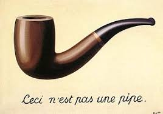

The Treachery of Images

The Treachery of Images also known as This Is Not a Pipe and The Wind and the Song, is a painting by the Belgian surrealist painter René Magritte
Artist: René Magritte
Location: Los Angeles County Museum of Art
Period: Surrealism
Created: 1928–1929
Medium: Oil paint
Go home
The Treachery of Images